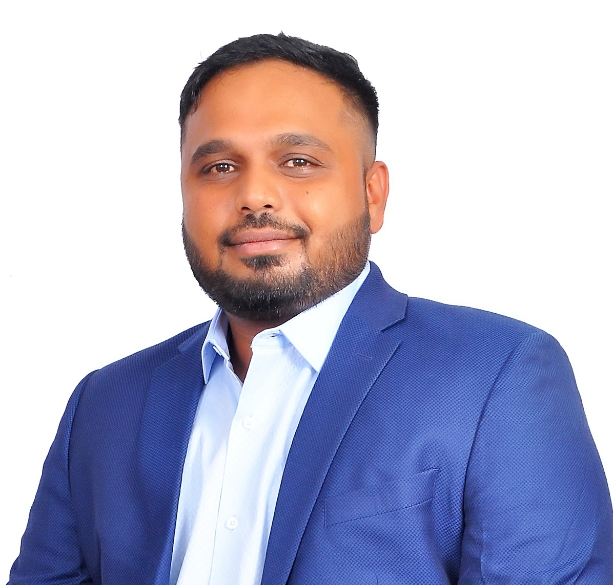

Thinesh Govindaraj Sridhar |

Career Summary
I am a graduate in Visual Communications and Creative Services with eleven years of experience specializing in writing, marketing, and content creation for both product and service-based companies. Presently, I am seeking fresh opportunities and challenges in Germany.
In the process of obtaining a German Dependent Visa with full-time work eligibility.
Education
08/2011 to 11/2013 | Edith Cowan University, Perth, Australia
Graduate Certificate of Communications, Specialisation in Creative Services
07/2008 to 04/2011 | Loyola College Autonomous, Chennai, India
Bachelor of Science in Visual Communication
Professional Experience
02/2023 - Present | Concentrix Catalyst, Chennai, India
Analyst - Content Strategy
- Contribute to a writing team supporting a major telecommunication client's internal agent communication tool.
- Maintain a database of over 500 articles aiding customer-facing agents in issue resolution and customer retention.
- Ensure compliance with editorial content guidelines and keep all articles updated.
- Develop new articles addressing communication gaps between agents and customers, covering
troubleshooting points and FAQs.
- Collaborate with the creative team to produce communication materials like posters, GIFs, and
announcements for frontline agent use.
- Create process documents for writing, archiving, publishing, and removing various article types.
09/2022 to 01/2023 | Damco Solutions, Noida, India
Lead Content Writer
04/2022 to 09/2022 | NimbleBox.ai, Chennai, India
Content Strategist
-
Assisted a MLOps-based startup in targeting their ideal audience through content strategy incorporating SEO, market research, and focus groups.
-
Collaborated on the creation of a newsletter delivering valuable content, solving problems, and facilitating solution discovery.
-
Established a consistent social media posting strategy, enhancing brand engagement and exposure on platforms like LinkedIn and Twitter.
-
Contributed to the launch of the inaugural MLOps meet in Bengaluru, India, alongside the executive team and MLOps community.
-
Work samples:
10/2021 to 03/2022 | Payoda Technologies, Chennai, India
Senior Digital Marketing Specialist
-
Developed a one-year roadmap for paid activities, incorporating Google Ads and LinkedIn Ads advertising.
-
Collaborated with a writer to revamp all landing pages for paid campaigns and worked with design and development teams to create a new, high-converting landing page template.
-
Executed Google Ads PPC campaigns targeting the 'Custom Development' and 'Financial Analytics' markets.
-
Conducted daily optimization of campaigns, adjusting keywords, ad copies, placements, geo-locations, and landing page parameters.
-
Worked closely with the sales team to understand lead quality, engagement levels, and responses to lead nurturing efforts.
-
Created re-marketing campaigns based on user engagement, website visit duration, and interactions with the sales team.
06/2020 to 09/2021 | Ameex Technologies, Chennai, India
Digital Marketing Specialist
-
Developed a roadmap for lead generation within the managed services business unit, utilizing content assets, SEO writing, paid advertisement, and landing page optimizations.
-
Collaborated with an e-commerce client to optimize their Google Ads account by analyzing campaigns, expenditure, and profitability.
-
Assisted an insurance client in identifying website gaps through content, engagement, and conversion analysis.
-
Created diverse content assets including landing pages, business case studies, white papers, e-books, and brochures by partnering with subject matter experts and marketing managers.
11/2016 to 06/2020 | Orangescape Technologies, Chennai, India
Social Media Specialist
-
Developed a social media strategy aimed at engaging potential customers, industry leaders, and influencers to enhance brand awareness and drive website traffic.
-
Established distinct brand and product presences on social media platforms, tailoring content to target audiences and perceptions.
-
Significantly increased followers, engagements, and website visitors across social media platforms.
-
Cultivated relationships with potential customers, industry thought leaders, influencers, and consultants on social platforms to bolster credibility.
-
Devised a video marketing strategy featuring concise 30-second animations to simplify complex topics in alignment with the brand's ethos of simplicity.
-
Played a key role in shaping the website for the Kissflow 3.0 launch and contributed significantly to the development of video content for the launch.
01/2015 to 07/2016 | Invention Labs Pvt Ltd, Chennai, India
Digital Media Analyst
-
Assisted the marketing manager with lead collection, email campaign drafting, and video messaging script development.
-
Crafted engaging social media content that consistently provides valuable information to customers
-
Collaborated with designers to create healthcare tips, learning tricks, and coping mechanisms for parents of children with Autism on social media platforms.
-
Supported the customer support team by addressing customer queries to identify root causes and incorporate solutions into marketing campaigns.
-
Aided the development team during critical releases by providing video content, descriptions, and images for the Google Play Store and Apple App Store.
09/2011 to 11/2013 | Southern Cricket Pvt Ltd, Perth, Australia
Social Media Manager (part time)
-
Established social channels for the organization.
-
Collaborated with an agency to redesign the website and developed subsidiary websites for local seasonal campaigns.
-
Produced weekly video content for social channels and created diverse videos for educational and entertaining purposes.
-
Ran campaigns on social platforms to attract target audiences during cricket season.
-
Implemented social content ideation and posting process for organization's future use.
-
Grew Southern Cricket's Facebook page followers organically targeting Perth, Western Australia audience.
-
Devised strategy utilizing video content featuring coaches and staff to engage the audience directly.
-
Established organization as authority in cricket through direct content interaction.